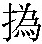

福建曾孝廉高捷南宫時，〔但評〕入夢。與二三新貴遨遊郊郭。 「高捷南宫時，與二三新貴遨遊郊郭」：手稿本「時」字上，原有「未便旋里」四字，塗去；鑄本作「捷南宫時，與二三同年遨遊郭外」。偶聞毗盧禪院寓一星者，因並騎往詣問卜。入，揖而坐。星者見其意氣，〔但評〕「意氣」二字，一篇之骨。稍佞諛 佞諛：〔何註〕諂言也。之。 「偶聞毗盧禪院寓一星者，因並騎往詣問卜。入揖而坐。星者見其意氣，稍佞諛之」：鑄本作「聞毗盧禪院寓一星者，往詣問卜。入揖而坐。星者見其意氣揚揚，稍佞諛之」；手稿本「星者」原作「白衣星者」，「坐」字下原作「星者望之曰：先生新燒龍尾，意頗揚揚，長安花看盡否？」，塗改。青本「揖」作「室」：並黄本無「稍」字。「意氣」：異史本、二十四卷本作「意氣揚揚」。〔何評〕常態。曾摇箑微笑，便問：「有蟒玉 蟒玉：〔何註〕賜蟒玉，自漢始。上公服也。與漢魏特進相似，開府稍不同。分否？」〔但評〕夢話。〔馮評〕驕妄人聲口峭。星者正容，許二十年太平宰相。曾大悦，氣益高，值小雨 「曾摇箑微笑，便問：『有蟒玉分否？』星者正容，許二十年太平宰相。曾大悦，氣益高。值小雨」：手稿本原作「曾摇箑微笑。星者詢庚甲，曾告之，笑曰：『看終作何官？』星者方凝思，曾又笑問曰：『是寧無蟒玉分耶？』星者曰：『十年可坐致耳。』曾慶慰出於非望，稍致
挹。星者正容曰：『勿以老夫言虚誕，二十年太平宰相可保。』曾大悦」，塗改，並於「值」上右旁加「氣益高」三字。「正容許」：鑄本作「曰」。，乃與遊侣避雨僧舍。〔馮評〕兩帶寫雨景，皆閑中點綴之妙。舍中一老僧，深目高鼻，坐蒲團上，偃蹇不爲禮。〔馮評〕將叙熱中人炫爛癡情，先寫一極冷老僧。衆一舉手， 「淹」：二十四卷本作「偃」。「手」：手稿本原作「首」，塗去，未補，今據諸參校本補。登榻自話。羣以宰相相賀， 手稿本「賀」上原有「戲」字，塗去。「相賀」：二十四卷本作「賀曾」。曾心氣殊高，〔但評〕視爾夢夢，我心慘慘。指同遊曰：「某爲宰相時，〔但評〕夢話。推張年丈作南撫， 鑄本、二十四卷本、異史本「指」作「便指」，異史本無「張」字。家中表爲參、游，我家老蒼頭亦得小千把，於願足矣。」 「於」：鑄本、異史本作「余」。〔但評〕一有此心，便入地獄矣。一坐大笑。俄聞門外雨益傾注，曾倦伏榻間，〔馮評〕入夢。〔但評〕才捷南宫，即意氣自高，已入夢境。况聞作二十年太平宰相，而不思何以答吾君，何以對天下，何以持盈保泰，何以裕國安邊；趾高氣揚，而僅以端揆之尊，明其恩怨，此尤夢之甚深者。老僧以夢醒之，慈悲之至。忽見有二中使， 中使：〔何註〕唐詩註：「天子私使也。」齎天子手詔，召曾太師决國計。〔馮評〕一片迷離。曾得意，〔但評〕「意氣」二字，先合後分。此以下專寫得意，而氣高即在其中。疾趨入朝。天子前席，温語良久，命三品以下，聽其黜陟， 黜陟：〔何註〕言升降也。書：「三考黜陟幽明。」即賜蟒玉、〔馮評〕爲相，邀殊眷，天子賜蟒玉。名馬。曾被服稽拜以出， 「得意，疾趨入朝，天子前席，温語良久，命三品以下聽其黜陟，賜蟒玉、名馬。曾被服稽拜以出」：手稿本原作「得意榮寵，亦烏知其非有也。疾趨入朝，天子前席而問曰：『臣庶勞卿襄理，調燮非易。』曾唯諾無以對休命。天子又曰：『進賢，退不肖，大臣之責。有所黜陟，三品以下，任卿胸臆，不必奏聞。』即命賜蟒服一襲，玉帶一圍，名馬二匹。曾被服稽拜以出，乘馬揮鞭，殆如翔翥」。塗改；鑄本、二十四卷本、異史本保留：「得意」下「榮寵，亦烏知其非有也」九字，「黜陟」下「不必奉聞」四字，「賜」字下「蟒服一襲，蟒玉一圍，名馬二匹」十二字。「拜」：二十四卷本作「首」。青本「以下」作「而下」，並黄本無「即」，「拜」作「首」。入家則非舊所居第，繪棟雕榱， 繪棟雕榱：〔何註〕棟音凍。爾雅註：「屋脊也」。易·大過：「棟隆吉。」榱音衰，椽也。繪，畫也。窮極壯麗，自亦不解何以遽至於此。〔但評〕意。然撚髯微呼， 「自亦不解何以遽至於此。然捻髯微呼」：二十四卷本「自亦」作「亦自」，無「然」字，並異史本、鑄本「髯」作「鬚」。青本「於」作「如」，黄本無「於」字。則應諾雷動。〔但評〕氣。俄而公卿贈海物，傴僂足恭者， 二十四卷本「贈」作「進」，「者」作「者者」。叠出其門。六卿來，倒屣 倒屣：〔何註〕屣音徙，無跟履也。〔吕註〕三國志·魏志·王粲傳：「粲徙長安左中郎將。蔡邕見而奇之。時賓客盈坐，聞粲在門，倒屣迎之。粲至，年即幼弱，容狀短小，一坐盡驚。邕曰：『此王公孫也，有異才，吾不如也。吾家書籍文章，盡當與之。』」而迎；侍郎輩，揖與語；下此者，頷之而已。〔但評〕意。晉撫饋女樂十人，皆是好女子。〔馮評〕居第之盛，僕隸之盛，舉朝趨奉之盛，聲色之盛。其尤者爲嫋嫋， 嫋嫋：〔何註〕嫋同裊，長弱貌。鮑照詩：「嫋嫋柳垂條。」△按：據文義，嫋嫋爲人名。爲仙仙，二人尤蒙寵顧。科頭休沐，日事聲歌。 「日事聲歌」下，手稿本原有「翠圍珠繞，盡情嘲笑」，塗改。〔但評〕意。一日，念微時嘗得邑紳王子良周濟，〔但評〕意。我今置身青雲， 青雲：〔吕註〕史記·范雎傳：「須賈頓首言死罪曰：『賈不意君能自致於青雲之上。』」○謝靈運詩：「惜無同懷客，共登青雲梯。」註：「仙者因雲而升，故謂之雲梯。」○天禄識餘：「史記云：『伯夷、叔齊雖賢，得夫子而名益彰；顔淵雖篤學，附驥尾而行益顯。』閭巷之人欲砥行立名，非附青雲之士，惡能施於後世哉！青雲之士，謂聖賢立言傳世者，孔子是也。附青雲則伯夷、顔淵是也。後世謂登仕路爲青雲，謬矣。試引數條以證之：京房易占：『青雲所覆，其下有賢人隱。』續逸民傳：『稽康早有青雲之志。梁孔稚珪隱居，多構山泉。衡陽王鈞往遊之，珪曰：「殿下處朱門遊紫闥，詎得與山人交耶？」鈞曰：「身處朱門而情遊滄海，形入紫闥而意在青雲。」』又袁彖贈隱士庾易詩曰：『昔聞巢許，今睹臺尚。』阮籍詩：『抗身青雲中，綱羅孰能施？』李太白詩：『獵客張兔罝，不能挂龍虎。所以青雲人，高歌在巖户。』合而觀之，青雲豈仕進之謂乎？王勃文：『窮且益堅，不墜青雲之志。』即論語『視富貴如浮雲』之旨。若窮而常有覬覦富貴之志，則鄙夫而已矣。自宋人用『青雲』字於登科詩中，遂誤至今。」渠尚蹉跎 蹉跎：〔何註〕音蹉駝，失時也。仕路，何不一引手？〔何評〕妄念。〔馮評〕報恩。早旦一疏，薦爲諫議，即奉俞旨，立行擢用。〔但評〕氣。又念郭太僕曾睚眦 睚眦：〔何註〕睚音崖，眦同眥，音漬，目崖也。范雎傳：「睚眦之怨必報」，謂目相忤也。〔吕註〕史記：「范雎曰：『一飯之德不忘，睚眦之嫌必報。』」註：「睚，舉目也；眦，目匡也。言舉目相忤者必報也。」我，〔但評〕意。即傳吕給諫及侍御陳昌等，授以意旨。〔馮評〕報怨。越日，彈章交至，奉旨削職以去。恩怨了了，頗快心意。〔但評〕氣。〔馮評〕以上許多節次。偶出郊衢，醉人適觸鹵簿，即遣人縛付京尹， 「付」：二十四卷本作「送」。〔但評〕意。立斃杖下。〔但評〕氣。〔馮評〕威權大肆，無惡不作矣。接第連阡者，皆畏勢獻沃産。自此富可埒國。 「接第連阡者，皆畏勢獻沃産，自此富可埒國」：手稿本原作「聲勢赫濯，纍足以跡」，塗改。〔但評〕意。無何，而嫋嫋、仙仙以次殂謝，朝夕遐想；忽憶曩年見東家女絶美，〔馮評〕潮勢將落，又忽涌起。每思購充媵御，輒以綿薄違宿願，今日幸可適志， 「今日幸可適志」：手稿本原作「今而後或可以適我志」，塗改。〔但評〕意。乃使幹僕數輩，强納貲於其家。〔馮評〕惡極。〔但評〕氣。俄頃，籐輿舁至，則較昔之望見時尤艷絶也。 「昔之」：鑄本作「之昔」。自顧生平，於願斯足。〔但評〕得意一束。又逾年，朝士竊竊，似有腹非 腹非：〔吕註〕前漢書·張湯傳：「湯奏當異九卿見令不便，不入言而腹非，論死。自是後有腹非之法比。」△按：引自前漢書·食貨志下。之者；〔馮評〕又暗轉。然各爲立仗馬， 立仗馬：〔何註〕白孔六帖：「厩日以八馬立宫門外，號南衙立仗馬。」〔吕註〕唐制，殿下兵衛曰仗。○新唐書·杜璡傳：「李林甫居相，諫官無敢正言。璡上書，斥爲下邽令。因以語動其餘曰：『君獨不見立仗馬乎？終日無聲而食三品，一鳴則斥之矣。』」△按：事見新唐書·李林甫傳。曾亦高情盛氣， 「然各爲立仗馬，曾亦高情盛氣」：手稿本原作「然揣其意各恐，爲立仗馬，曾亦高情盛氣」，塗改；二十四卷本無「各爲立仗馬」，「情」作「心」。鑄本、異史本同手稿本塗改前文字。不以置懷。〔但評〕繳「意」字，起「氣」字。〔馮評〕將落仍不落。有龍圖學士 龍圖學士：〔吕註補〕泊宅編：「舊制直龍圖閣，謂之假龍；龍圖閣待制，謂之小龍；龍圖直學士，謂之大龍；龍圖閣學士，謂之老龍。然帶此職例呼龍圖。近歲，本閣學士朝廷尤重之，少曾除授，有授此職者遂呼龍圖。」包上疏， 「不以置懷抱，間有龍圖學士包上疏」：手稿本「懷抱」下原有「間」字，塗去；「包」：手稿本原作「包拯」，塗去「拯」字；鑄本、異史本、二十四卷本有「拯」字。〔但評〕進士而太師是第一節。此一節又分八層：第宅壯麗一層，應諾雷動二層，公卿奔競三層，恣意聲歌四層，私恩必酬五層，睚眦必報六層，勢吞民産七層，强占民女八層。以學士參疏結之。○先以朝士腹非，各立仗馬，曾高情盛氣，不以置懷，作一縱筆。既應起處「意氣」二字，文勢亦操縱有力。〔何評〕宋書生讀大明律。其略曰 「略曰」：黄本作「略云」。：「竊以曾某，原一飲賭無賴，市井小人。一言之合，榮膺聖眷；父紫兒朱，恩寵爲極。不思捐軀摩頂， 「摩」：青本作「靡」；黄本作「磨」。以報萬一；反恣胸臆，擅作威福。可死之罪，擢髮難數。 擢髮難數：〔何註〕言罪多如髮難數也。〔吕註〕史記·范雎蔡澤列傳：「范雎曰：『汝罪有幾？』曰：『擢賈之髮以數賈之罪，尚未足。』」○按：數，一作贖。朝廷名器，居爲奇貨；量缺肥瘠，爲價重輕。因而公卿將士，盡奔走於門下：估計夤緣，儼如負販；仰息望塵， 望塵：〔何註〕如石崇、潘岳諂事賈謐，候其出，望塵雅拜。不可算數。或有杰士賢臣，不肯阿附，輕則置之閑散，重則褫以編氓。甚且一臂不袒，輒迕鹿馬之姦； 迕鹿馬之姦：〔何註〕謂稍不阿附，輒逆其情，而指鹿爲馬也。四征賦註：「趙高以蒲爲脯，以鹿爲馬，將使天下不敢言，而後爲所欲爲也。」片語方干， 「片語方干」：青本、黄本無。遠竄豺狼之地。朝士爲之寒心，朝廷因而孤立。又且平民膏腴，任肆蠶食； 「蠶」：青本、黄本作「吞」。良家女子，强委禽妝。沴氣 沴氣：〔何註〕沴音麗，惡氣也。冤氛，暗無天日。奴僕一到，則守、令承顔；書函一投，則司、院枉法。或有厮養 厮養：〔吕註〕公羊傳：「厮役扃養。」註：「析薪爲厮，炊烹爲養。」之兒，瓜葛之親，出則乘傳，風行雷動。地方之供給稍遲，馬上之鞭撻立至。荼毒人民，奴隸 奴隸：〔何註〕奴，僕也，隸，皂隸也。官府。扈從所臨，野無青草。 野無青草：〔何註〕左傳言歲荒，此喻騷擾。而某方炎炎赫赫， 炎炎赫赫：〔何註〕如火勢蒸騰而上。詩·大雅：「赫赫炎炎。」怙 怙：〔何註〕音户，恃也。書·畢命：「怙侈滅義。」寵無悔。召對方承於闕下，萋菲 萋菲：〔吕註〕詩·小雅：「萋兮斐兮，成是貝錦。」○菲，宜作斐。△按：「萋斐」亦作「萋菲」。〔何註〕萋菲，小文貌。詩：「萋兮斐兮，成是貝錦。」貝，水中介蟲，文采似錦。謂譖人，因人之小過而飾成大罪也。輒進於君前；委蛇才退於自公，聲歌已起於後苑。聲色狗馬，晝夜荒淫；國計民生，罔存念慮。世上寧有此宰相乎！内外駭訛， 駭訛：〔何註〕駭，異也；訛，動也。謂不自安也。人情汹汹。若不急加斧鑕之誅，勢必釀成操、莽之禍。 操、莽之禍：〔吕註〕漢獻帝二十五年，曹操還至洛陽，卒。太子丕稱皇帝，廢帝爲山陽公。○孝平帝五年，安漢公王莽弒帝，居攝踐祚。立宣帝玄孫嬰爲皇太子，號曰孺子。具詳綱目。臣夙夜祗懼， 手稿本「臣」下原有「拯」字，塗去，鑄本、異史本、二十四卷本保留。不敢寧處，冒死列款，仰達宸聽。伏祈斷姦佞之頭，籍貪冒 貪冒：〔何註〕冒音耄，貪蔽也。前漢書·翟方進傳：「冒濁苟容。」之産，上回天怒，下快輿情。如果臣言虚謬，刀鋸鼎鑊，即加臣身。」云云。〔但評〕疏切直嚴厲。疏上，曾聞之，氣魄悚駭，如飲冰水。〔但評〕此下專寫喪氣，層層意俱對針上得意處。幸而皇上優容， 優容：〔何註〕寬容也。留中不發。〔馮評〕猶不遽落。以下則疾風迅雷甚雨，一齊俱來。又繼而科、道、九卿交章劾奏； 劾奏：〔何註〕劾音瀣。按劾也。△按：劾音合。 青本「繼」上無「又」字。即昔之拜門牆、稱假父者，亦反顔相向。〔但評〕氣。○天下惟拜門生、稱假父者，善看風勢。公道既彰，未有不反顔相向者。勢利之交，千古一轍。奉旨籍家，充雲南軍。子任平陽太守，已差員前往提問。曾方聞旨驚怛， 二十四卷本「奉」作「乃奉」。「曾方聞旨驚怛」作「曾聞旨，方驚怛無措」。〔但評〕氣。旋有武士數十人，帶劍操戈，直抵内寢，褫其衣冠，與妻並繫。〔但評〕氣。俄見數夫運貲於庭，金銀錢鈔以數百萬， 二十四卷本「鈔」下無「以」字。珠翠瑙玉數百斛，幄幕簾榻之屬，又數千事，以至兒襁女舄，遺墜庭階。曾一一視之，酸心刺目。〔但評〕氣。又俄而一人掠美妾出，披髮嬌啼，玉容無主。〔馮評〕似嚴介溪籍没時。悲火燒心，含憤不敢言。 二十四卷本無「含」字。〔但評〕氣。俄樓閣倉庫，並已封誌， 「俄，樓閣倉庫並已封誌」：手稿本原作「一人執鎖鑰，封誌樓閣倉庫」，塗改。立叱曾出。〔但評〕氣。監者牽羅曳而出，夫妻吞聲就道， 「監者牽羅曳而出，夫妻吞聲就道」：手稿本原作「監者牽頸，羅曳之。乃携妻吞聲就道」，塗改。二十四卷本無「羅」、「而出」三字。「牽」：青本、黄本作「牽挽」。求一下駟劣車，少作代步，亦不得。 「亦不得」：青本、黄本、二十四卷本、鑄本作「亦不可得」。〔王評〕甚似分宜相籍没，寄食廣濟院相。〔但評〕氣。十里外，妻足弱，欲傾跌，曾時以一手相攀引； 「十里外」：手稿本原作「回顧厮僕，遯去無存。夫妻零涕而行，十里外」。塗改。「攀」：二十四卷本作「扶」。又十餘里，己亦困懶。欻見高山，直插霄漢， 「已亦困懶。欻見高山直插霄漢」：手稿本「欻」上原有「不能支」三字，塗去；「懶」：青本、異史本、鑄本、二十四卷本作「憊」。自憂不能登越，時挽妻相對泣，而監者獰目來窺，不容稍停駐。 二十四卷本「來窺」作「視之」，無「駐」字。又顧斜日已墜，無可投止， 異史本、鑄本「可」作「何」。不得已，參差蹩躠 蹩躠：〔何註〕音撇薛。旋行貌。△按：蹩音别。據文義，蹩躠爲盡力貌。而行。比至山腰，妻力已盡，泣坐路隅；〔但評〕氣。曾亦憩止，任監者叱駡。〔但評〕喪氣一頓。忽聞百聲齊譟，有羣盗各操利刃，跳梁 跳梁：〔何註〕蕭望之傳：「井蛙跳梁井干之上。」△按：漢書·蕭望之傳作「跳梁於山谷間」，註文應引自莊子·秋水。而前。 「跳梁而前」：二十四卷本作「跳踉而至」。〔馮評〕半空又起霹靂，嚇煞人也。監者大駭，逸去。曾長跪，〔但評〕氣。言 「言」：鑄本作「告曰」。：「孤身遠謫，橐中無長物。」哀求宥免。羣盗裂眦宣言：「我輩皆被害冤民，衹乞得佞賊頭，他無索取。」曾叱怒曰 「他無索取，曾叱怒曰」：「他無索取」下手稿本原有「即有數人擁妻狎暱，嘲戲無不至」，塗去；「叱怒」：鑄本、二十四卷本作「怒叱」。：「我雖待罪，乃朝廷命官，〔馮評〕好貨！賊子何敢爾！」〔但評〕氣。賊亦怒，以巨斧揮曾項，〔但評〕以上生前喪氣，暗帶「意」字。以下死後喪氣，明帶「意」字。覺頭墮地作聲。 二十四卷本「亦怒」作「怒」，「項」作「頭」，並青本、黄本「墮」作「墜」。〔但評〕太師而充軍是第二節。亦分八層：提問其子一層，褫服逮繫二層，籍没資財三層，掠去姬妾四層，封誌倉庫五層，監押步行六層，挽妻登越七層，跪盗乞哀八層，以羣盗斧揮結之。亦先以曾怒叱賊略作一縱，即反映上文「意氣」二字。與上一章相配，如玉山高並兩峰寒也。魂方駭疑，即有二鬼來，〔馮評〕以下又似吴道子畫地獄變象，觀之數日不怡。反接其手，驅之行。行逾數刻，入一都會。頃之，睹宫殿；殿上一醜形王者， 「一醜」：二十四卷本作「有醜」。憑几决罪福，曾前匐伏請命。 「匐伏請命」：異史本作「匍匐請命」，二十四卷本作「匍匐聽命」，鑄本作「匍伏請命」。王者閲卷，才數行，即震怒曰：「此欺君誤國之罪，宜置油鼎！」萬鬼羣和，聲如雷霆。即有巨鬼捽至墀下。 「即有巨鬼捽墀下」：手稿本原作「竟以巨抓捽至墀下」，塗改。〔馮評〕奇鬼攫人，不止加一倍寫法。見鼎高七尺已來，四圍熾炭，鼎足盡赤。曾觳觫 觳觫：〔何註〕音斛速，懼死貌。哀啼， 「已來」：二十四卷本作「許」。「鼎足盡赤。曾觳觫哀啼」：手稿本「赤」字下原有「油星崩射，爆然作響」八字，塗去。「赤」：青本、黄本作「紅」。「啼」：二十四卷本作「號」。〔但評〕意氣。竄跡無路。鬼以左手抓髮， 「鬼」：手稿本原作「一巨鬼」，塗改。右手握踝，拋置鼎中。覺塊然一身，隨油波而上下；〔但評〕自在中流，真是得意。皮肉焦灼，痛徹於心；沸油入口，煎烹肺腑。念欲速死，而萬計不能得死。〔但評〕意氣。約食時，鬼方以巨叉取曾出，復伏堂下。 異史本、鑄本「取曾」下無「出」字。黄本「取曾出」作「取出」，並青本「伏」作「置」。王又撿册籍，怒曰：「倚勢凌人，合受刀山獄！」 刀山獄：〔吕註〕見西遊記。鬼復捽去。 「復捽」：青本作「又捽」。見一山，不甚廣闊，而峻削壁立，利刃縱横，亂如密笋。先有數人罥腸刺腹於其上，呼號之聲， 手稿本「呼號」下原有「痛楚」二字，塗改。慘絶心目。鬼促曾上，曾大哭退縮；〔但評〕意氣。鬼以毒錐刺腦，曾負痛乞憐。鬼怒，捉曾起，望空力擲。覺身上雲霄之上，〔但評〕置身青雲，真是得意。暈 暈：〔何註〕史記·天官書：「兩軍相當曰暈。」謂方落時，衆兵相向，如當軍旅者然。△按：暈，據文義應爲眩暈。然一落，刃交於胸，痛苦不可言狀。又移時， 二十四卷本「痛苦」作「痛楚」，無「又」字。身軀重贅，刀孔漸闊，忽焉脱落， 「焉」：黄本作「然」。四支蠖屈。 蠖曲：〔吕註〕易·繫辭：「尺蠖之屈，以求信也。」鬼又逐以見王。王命會計生平賣爵鬻名，枉法霸産，所得金錢幾何。即有鬡鬚人持籌握算，曰：「三百二十一萬。」 二十四卷本「鬚人」作「鬚吏」，「二十一」作「三十一」。「三百」：鑄本作「二百」。王曰：「彼既積來，還令飲去！」〔但評〕意氣時何如？此時又何如？少間，取金錢堆階上，如丘陵。漸入鐵釜，熔以烈火。鬼使數輩，更以杓灌其口， 二十四卷本「丘」上有「小」字，「鐵釜」作「釜中」。鑄本、異史本、二十四卷本「更」作「更相」。流頤則皮膚臭裂，入喉則臟腑騰沸。生時患此物之少，是時患此物之多也！ 二十四卷本「時」下有「又」字。〔王評〕佛□耶，菩薩□耶？〔但評〕不必攫人，而已滿鯨吞之口；不必自積，而已飽溪壑之腹。生前勞苦，死後受用。○積來還飲去，點滴不曾遺。此物多耶少，惟君自酌之。〔馮評〕唤醒一世癡迷，真是慈悲文字。半日方盡。王者令押去甘州爲女。行數步，見架上鐵梁，圍可數尺，綰一火輪， 「火」：青本作「大」。〔何評〕轉輪。其大不知幾百由旬， 由旬：〔何註〕「由旬」恐誤刻。本有謂幾百由旬，有謂幾百萬層者。佛經：猶程也。〔吕註〕庾信詩：「千柱蓮花塔，由旬紫紺園。」按：支遯載外國事，由旬者，晉言四十里。○又，瞿曇論：「四肘爲一弓，五百弓爲一拘廬舍，今之二里也。八拘廬舍爲一由旬，今十六里也。」焰生五采，光耿雲霄。鬼撻使登輪，方合眼躍登，則輪隨足轉，〔馮評〕不知聊齋從何處看出俗下僧道度亡所畫幀子轉輪車如此。似覺傾墜，遍體生凉。〔但評〕太師作斷頭鬼是第三節。此一節分三層：欺君誤國，宜置油鼎，一層；倚勢凌人，合受刀山，二層；賣爵鬻名，枉法霸産，自飲金錢汁，三層。句句都從氣高寫照，而以轉輪收之，即遞入下節。開眸自顧， 「眸」：鑄本、異史本、二十四卷本作「目」。身已嬰兒，而又女也。〔王評〕何不□見墮驢腹中。視其父母，則懸鶉敗焉。 「敗焉」：青本、黄本、二十四卷本、鑄本作「敗絮」。土室之中，瓢杖猶存。心知爲乞人子。日隨乞兒托鉢，腹轆轆 轆轆：〔何註〕轆，車軌道謂之轣轆。轆轆，腸中虚鳴，如車輪之轉也。然，常不得一飽。着敗衣， 「然常」：鑄本無。「衣」：二十四卷本作「絮」。風常刺骨。十四歲，鬻與顧秀才備媵妾。 「與」：二十四卷本作「於」，異史本無「顧」字。〔但評〕宰相而姦佞，妾婦之道也。宰相而貪墨，見金夫不有躬者也。爲女，爲乞人子，爲媵妾，亦如其願以償之耳。衣食粗足自給，而冢室悍甚，日以鞭箠從事，輒以赤鐵烙胸乳。 「輒以」：鑄本作「輒用」。〔馮評〕惡境頻來。幸而良人頗憐愛，稍自寬慰。 「而良人」：鑄本無「而」字。「稍自」：手稿本原作「稍稍自」，塗改。東鄰惡少年，忽窬垣來逼與私。 「垣」：鑄本作「牆」。〔馮評〕層波駭浪，憤怒掀天。乃自念前身惡孽，已被鬼責，今那得復爾。於是大聲疾呼。良人與嫡婦盡起，惡少年始竄去。居無何， 「那得」：二十四卷本作「那可」。鑄本「惡少年」作「少年」，「居無何」作「一日」。秀才宿諸其室，枕上喋喋，方自訴冤苦。忽震厲一聲，室門大闢，有兩賊持刀入，竟决秀才首，囊括衣物。團伏 團伏：〔何註〕畏寒，恐懼圍抱之狀。被底，不敢復作聲。 「團伏被底，不敢復作聲」：二十四卷本作「但蒙首團伏被底，不敢作聲」，鑄本無「復」字。既而賊去，乃喊奔嫡室。嫡大驚，相與泣驗。遂疑妾以姦夫殺良人，因以狀白刺史；刺史嚴鞫，竟以酷刑定罪案，依律凌遲 凌遲：〔吕註〕遼史：「宗室雅里爲夷離謹以掌刑辟，其制刑有四，曰：死、流、徒、杖。死刑有斬、絞、凌遲之屬。」○明史：「三死之外有凌遲，以處大逆不道，非五刑之正。」處死。 「喊」：異史本作「呼」。「妾以」：二十四卷本作「妾引」。鑄本無「因以」二字，「以酷刑定罪案，依律」，作「以酷刑誣服，擬」。「刺史嚴鞫」：青本無「刺史」二字。〔但評〕對針意氣，至於嬰兒，而且女，而且乞人女，而且秀才媵妾，而且冢室悍毒，而且被誣姦殺，依律凌遲；直寫到二十分，夫然後高者可以抑，勝者可以降，凡一切妄念幻想，自然淡、自然滅矣。縶赴刑所，胸中冤氣扼塞，距踴 距踴：〔何註〕音巨勇，騰躍也。聲屈，覺九幽十八獄， 九幽十八獄：〔吕註〕見西遊記。無此黑黯也。〔但評〕太師爲乞人女是第四節。亦分三層：幼苦饑寒，轉鬻作賤，一層；身遭炙烙，欲訴無由，二層；才免姦污，又遭盗劫，反受姦殺誣，三層。亦皆爲氣高對影，而以悲號收之。對上轉輪一筆，亦即遞入下文。○喪氣大束。正悲號間，聞遊者呼曰：「兄夢魘耶？」 夢魘：〔吕註〕見咬鬼「魘夢」註。〔馮評〕出夢。豁然而寤， 鑄本無「夢」字。二十四卷本「豁然」作「曾豁然」。見老僧猶跏趺座上。同侣競相謂曰：「日暮腹枵，何久酣睡？」曾乃慘淡而起。僧微笑曰：「宰相之占驗否？」〔但評〕「宰相之占」一句，收束全文。冷語刺心，而以火坑中有青蓮爲迷津寶筏。臺閣中人，當以「修德行仁」四字信受奉行。曾益驚異，拜而請教，僧曰：「修德行仁，火坑中有青蓮 青蓮：〔吕註〕法苑珠林：「佛圖澄妙通玄術，取鉢盛水，燒香咒之。須臾，鉢中生青蓮花。」也。〔但評〕如是我聞，信受奉行。山僧何知焉。」曾勝氣而來，不覺喪氣而返，臺閣之想，由此淡焉，入山不知所終。 鑄本「入」上有「後」字，二十四卷本「入山」下有「學道」二字。〔馮評〕一句逗笋，筆法絶妙。即帶老僧夾叙一筆，萬丈火坑，一團冰消，結得飄渺，不比清遠道人邯鄲夢·度盧一齣。
異史氏曰：「福善禍淫，天之常道。聞作宰相而忻然於中者， 「忻」：青本、黄本作「歡」。必非喜其鞠躬盡瘁可知矣。是時，方寸中宫室妻妾， 「方寸中」：青本、黄本作「方寸」。無所不有。然而夢固爲妄， 鑄本無「福善……然而」共四十二字。想亦非真。彼以虚作，神以幻報。黄粱將熟，此夢在所必有，當以附之『邯鄲』 邯鄲：〔吕註〕枕中記：「開元中，吕翁得神仙術。遊邯鄲道中，遇少年盧生同邸，自嘆貧困。言訖思睡，翁取囊中枕授盧曰：『枕此當榮適如願。』生枕之，夢身適枕穴中。未幾登第，出入將相五十年，榮盛無比。一夕卒，遂寤。吕翁在旁，主人蒸黄粱尚未熟。」△按：邯鄲，指湯顯祖邯鄲記。之後。」
〔手稿本某乙評〕續黄粱或云太酷。鷗亭云：「正是唤醒他。」元微之云：「千恩萬謝唤魘人，向使無君終不寤。」
〔何評〕夢幻之中，何所不有？倏忽已歷再生，即不必現諸果報，已令人廢然返矣。
〔王芑孫評〕觀此篇，世之自命不凡者，倘能窮則獨善，達則兼善，方且功名垂之竹帛，何有此景况哉！曾之不能如此，其使之夢者，正所以使之悟也。
〔方評〕余嘗遊長安，見夫朱綸丹轂威福一時，未幾而名挂彈章，家破身亡，有不忍言者，何得謂之夢哉！曾生幸因夢而得醒，故入山唯恐不深耳。世之方入夢者尚知宜醒，不以醒爲夢，庶不終於夢夢矣。
〔校記〕（底本：手稿本 參校本：青本、異史本、黄本、二十四卷本、鑄本）
本章完!